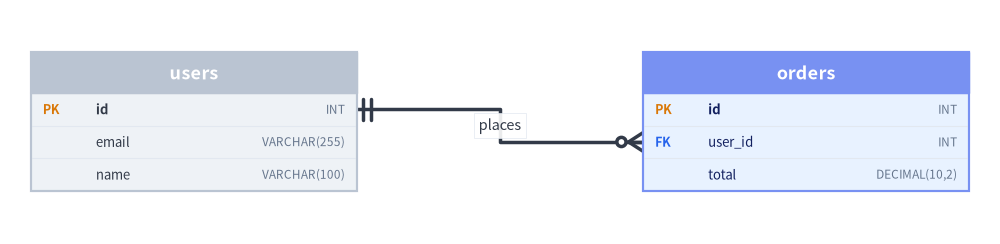
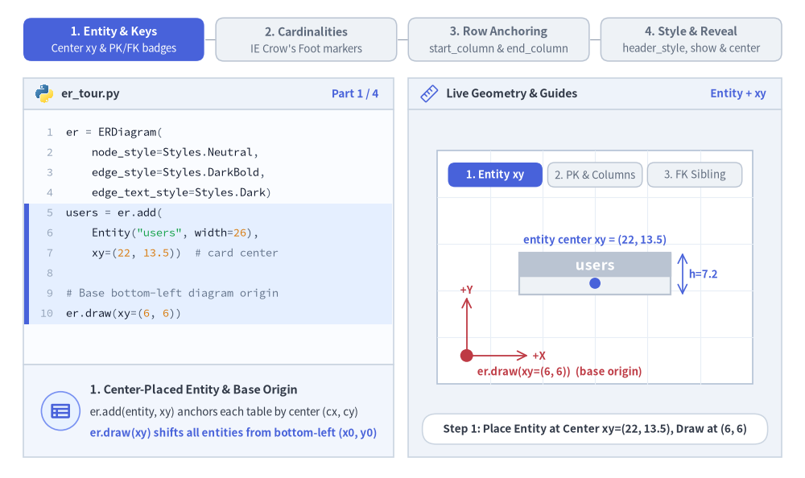
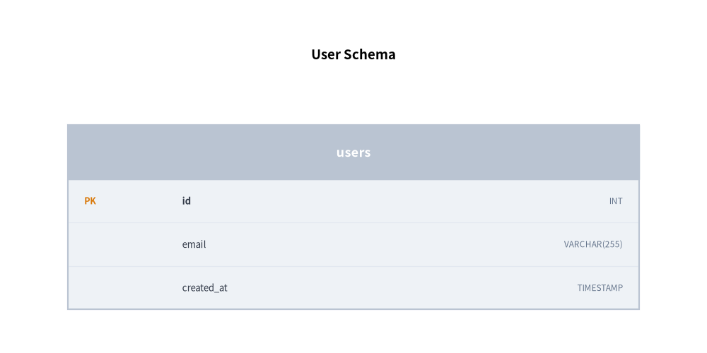
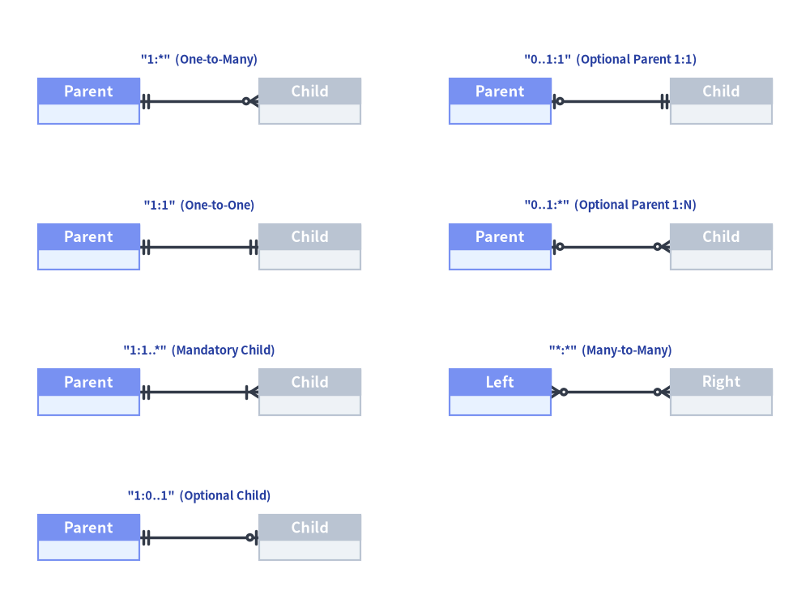
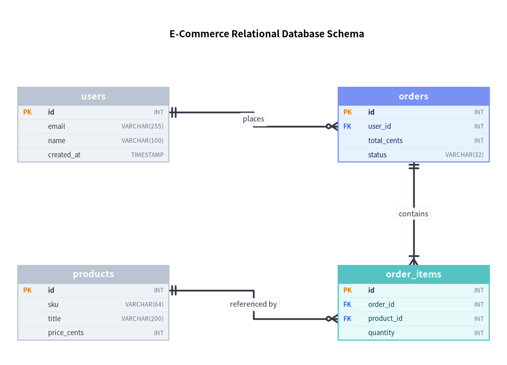

ER 図 (ERDiagram): リレーショナルスキーマと Crow's Foot 記法
ERDiagram は、物理データベーススキーマモデリングの業界標準である Information Engineering (IE) / Crow's Foot（カラスの足跡）記法に厳密に準拠してリレーショナルデータベースアーキテクチャを可視化します。

Source Code
from drawlib.canvas import save, setup
from drawlib.diagrams.er import ERDiagram, Entity
from drawlib.styles import Styles
setup(width=98, height=24)
er = ERDiagram(
node_style=Styles.Neutral,
edge_style=Styles.DarkBold,
edge_text_style=Styles.Dark.patch(text_size=10.5),
)
users = er.add(Entity(name="users", width=32.0), xy=(19.0, 12.0))
users.add_column("id", type="INT", pk=True)
users.add_column("email", type="VARCHAR(255)", nullable=False)
users.add_column("name", type="VARCHAR(100)")
orders = er.add(Entity(name="orders", width=32.0, style=Styles.PrimaryNeutral), xy=(79.0, 12.0))
orders.add_column("id", type="INT", pk=True)
orders.add_column("user_id", type="INT", fk=True)
orders.add_column("total", type="DECIMAL(10,2)", nullable=False)
users.connect(
orders,
cardinality="1:*",
start_side="right",
end_side="left",
start_column="id",
end_column="user_id",
label="places",
)
er.draw(xy=(0.0, 0.0))
save()
1. 基本概念と基本的な使い方
ERDiagram は、er.add(entity, xy=(cx, cy)) によってリレーショナルな Entity テーブルを中心 (cx, cy) 基準で配置し、すべてのカラムが収まるよう effective_height を自動拡張しながら、自動 PK / FK キーバッジ付きの型付きスキーマ行を描画します。リレーションシップは業界標準の Information Engineering (IE) 方式 Crow's Foot の cardinality マーカーを描画し、start_column と end_column で主キー行・外部キー行へ直接スナップ接続できるほか、カスタムの header_style バンド、show=False による非表示、align="center" 配置をサポートします。

- 中心基準の
Entityカードとキーバッジ (xy,pk,fk,nullable):er.add(entity, xy=(cx, cy))は各テーブルを中心座標で配置し、.add_column(...)がアンバー色のPKタグや青色のFKタグを付与しながらeffective_heightを自動的に拡張します。 - IE 方式 Crow's Foot カーディナリティ (
cardinality):entity.connect(...)とer.connect(...)は、全 7 種類の多重度（"1:*"、"1:1"、"1:1..*"、"1:0..1"、"0..1:1"、"0..1:*"、"*:*"）にわたる Information Engineering ベクターマーカーを描画します。 - 行レベルのカラムアンカー接続 (
start_column,end_column): テーブル中央の汎用ポートではなく、"left"/"right"側面の特定の主キー行・外部キー行へリレーションシップ線を直接スナップ接続できます。 - ヘッダースタイル・表示制御・中央配置 (
header_style,show=False,align="center"):header_styleで注目テーブルを強調したり、show=Falseでレイアウトを保ったままエンティティと接続済みの Crow's Foot 線を非表示にしたり、align="center"でxyを中心にスキーマ全体を配置したりできます。
2. コンストラクタとエンティティ定義
from drawlib.canvas import save, setup
from drawlib.diagrams.er import ERDiagram, Entity
from drawlib.styles import Styles
setup(width=52, height=26)
er = ERDiagram(
node_style=Styles.Neutral,
edge_style=Styles.DarkBold,
edge_text_style=Styles.Dark.patch(text_size=10.5),
title="User Schema",
title_style=Styles.BlackBold.patch(text_size=13.5),
width=52.0,
height=20.0,
)
# Create entity table
users = er.add(Entity(name="users", width=42.0), xy=(26.0, 10.0))
users.add_column("id", type="INT", pk=True)
users.add_column("email", type="VARCHAR(255)", nullable=False)
users.add_column("created_at", type="TIMESTAMP")
er.draw(xy=(0.0, 0.0))
save()

パラメータリファレンス
ERDiagram クラス
| パラメータ | 型 | デフォルト | 説明 |
|---|---|---|---|
node_style |
Style |
(必須) | ダイアグラム内のエンティティテーブルカードのベース Style オブジェクト。 |
edge_style |
Style |
(必須) | リレーションシップ線および Crow's Foot マーカーのベース Style オブジェクト。 |
edge_text_style |
Style |
(必須) | リレーションシップラベルのベース Style オブジェクト。 |
title |
str |
"" |
ダイアグラム上部に表示する任意のバナータイトル。 |
title_style |
Style | None |
None |
ダイアグラムタイトルの Style オブジェクト（任意）。 |
width |
float | None |
None |
ダイアグラムの固定幅（None の場合は自動フィット）。 |
height |
float | None |
None |
ダイアグラムの固定高さ（None の場合は自動フィット）。 |
style |
Style | None |
None |
ダイアグラム背景カードの Style オブジェクト（任意）。 |
header_style |
Style | None |
None |
ダイアグラム全体のエンティティヘッダー帯を一括上書きする Style（任意）。 |
Entity クラス
| パラメータ | 型 | デフォルト | 説明 |
|---|---|---|---|
name |
str |
(必須) | ヘッダー帯に表示するテーブル名／エンティティ名。 |
width |
float |
25.0 |
テーブル境界ボックスの幅（キャンバス単位）。 |
height |
float | None |
None |
最小高さのオーバーライド（None または不足時は全カラムが収まる高さへ自動拡張）。 |
size |
tuple[float, float] | None |
None |
width と height をまとめて指定する (width, height) タプル（任意）。 |
header_height |
float |
4.0 |
エンティティタイトルヘッダー区画の高さ。 |
row_height |
float |
3.2 |
各カラム行の垂直高さ。 |
style |
Style | None |
None |
エンティティ本体ボックスおよび枠線の Style（任意）。 |
header_style |
Style | None |
None |
このエンティティのヘッダー背景およびテキストの Style（任意）。 |
show |
bool |
True |
表示フラグ（False の場合、接続されている Relationship 線も自動非表示）。 |
カラム定義（add_column・add_columns・ColumnInfo）
| パラメータ | 型 | デフォルト | 説明 |
|---|---|---|---|
name |
str |
(必須) | カラム（フィールド）名。 |
type |
str |
"" |
SQL データ型文字列（例: "INT"、"VARCHAR(255)"）。 |
pk |
bool |
False |
True の場合、[PK] 主キーバッジを表示。 |
fk |
bool |
False |
True の場合、[FK] 外部キーバッジを表示。 |
nullable |
bool |
True |
カラムが NULL 値を許容するかどうか。 |
from drawlib.diagrams.er import ColumnInfo
# Single column & batch column registration
entity.add_column(name: str, type: str = "", pk: bool = False, fk: bool = False, nullable: bool = True) -> Entity
entity.add_columns(
columns: Sequence[Sequence[Any] | ColumnInfo],
# Each item is a ColumnInfo or tuple (name, [type, pk, fk, nullable])
) -> Entity
Relationship（entity.connect & er.connect）
| パラメータ | 型 | デフォルト | 説明 |
|---|---|---|---|
start / target |
Entity |
(必須) | 始点および終点の Entity テーブル（entity.connect(target, ...) または er.connect(start, end, ...)）。 |
cardinality |
Cardinality |
"1:*" |
Crow's Foot 多重度（"1:*"、"1:1"、"1:1..*"、"1:0..1"、"0..1:1"、"0..1:*"、"*:*"）。 |
start_side |
Literal["left", "right", "top", "bottom", "auto"] |
"auto" |
始点エンティティ外周上の接続辺。 |
end_side |
Literal["left", "right", "top", "bottom", "auto"] |
"auto" |
終点エンティティ外周上の接続辺。 |
start_column |
str | None |
None |
start エンティティ内のカラム名（指定するとその行へ接続線を直接アンカー固定）。 |
end_column |
str | None |
None |
end エンティティ内のカラム名（指定するとその行へ接続線を直接アンカー固定）。 |
label |
str |
"" |
接続線に沿って表示する任意のリレーションシップラベル。 |
style |
Style | None |
None |
リレーションシップ線および Crow's Foot マーカーの Style オーバーライド（任意）。 |
text_style |
Style | None |
None |
リレーションシップラベルテキストの Style オーバーライド（任意）。 |
routing |
Literal["orthogonal", "direct"] |
"orthogonal" |
配線戦略（"orthogonal" Z 字直交ベンド、または "direct" 直線）。 |
padding |
float | tuple[float, float] |
0.0 |
エンティティ枠線と接続線端点の間の余白距離。 |
show |
bool |
True |
リレーションシップ線の表示フラグ。 |
登録・サイズ取得・描画メソッド
er.add(entity, xy=(cx, cy), show: bool | None = None) -> Entity: エンティティテーブルを中心(cx, cy)に配置し、ミュータブルなEntityを返します。entity.connect(target, cardinality="1:*", ..., show=True) -> Relationshipまたはer.connect(start, end, cardinality="1:*", ..., show=True) -> Relationship（およびer.add_relationship(rel) -> Relationship）: 2 つのエンティティを Crow's Foot 記法で接続し、ミュータブルなRelationship（rel.show、rel.style、rel.text_style）を返します。er.get_size() -> tuple[float, float]: ダイアグラム全体の(width, height)を返します。er.draw(xy=(0.0, 0.0), *, scale: float = 1.0) -> None: 左下xyを基準として、テーブル形状、Crow's Foot マーカー、フォントサイズをscale倍に比例スケーリングして ER 図を描画します。
3. サポートされるカーディナリティ記法一覧
| カーディナリティ文字列 | 親側マーカー | 子側マーカー | 標準的な意味 |
|---|---|---|---|
"1:*" |
1（二重縦線） | 0 以上（丸＋カラスの足） | 1 対多（デフォルト） |
"1:1" |
1（二重縦線） | 1（二重縦線） | 1 対 1 |
"1:1..*" |
1（二重縦線） | 1 以上（縦線＋カラスの足） | 必須の子を持つ 1 対多 |
"1:0..1" |
1（二重縦線） | 0 または 1（丸＋縦線） | 任意の子を持つ 1 対 1 |
"0..1:1" |
0 または 1（丸＋縦線） | 1（二重縦線） | 任意の親を持つ 1 対 1 |
"0..1:*" |
0 または 1（丸＋縦線） | 0 以上（丸＋カラスの足） | 任意の親を持つ 1 対多 |
"*:*" |
0 以上（丸＋カラスの足） | 0 以上（丸＋カラスの足） | 多対多 |
from drawlib.canvas import save, setup
from drawlib.diagrams.er import ERDiagram, Entity
from drawlib.styles import Colors, Styles
from drawlib.text import text
setup(width=128, height=96)
er = ERDiagram(
node_style=Styles.Neutral,
edge_style=Styles.DarkBold,
edge_text_style=Styles.Dark.patch(text_size=10.5),
)
# 7 supported Crow's Foot cardinality strings arranged in a clean 2-column catalog
specs = [
# Left column (x_src=14, x_dst=49)
('"1:*" (One-to-Many)', "1:*", 14.0, 49.0, 80.0, "Parent", "Child"),
('"1:1" (One-to-One)', "1:1", 14.0, 49.0, 57.0, "Parent", "Child"),
('"1:1..*" (Mandatory Child)', "1:1..*", 14.0, 49.0, 34.0, "Parent", "Child"),
('"1:0..1" (Optional Child)', "1:0..1", 14.0, 49.0, 11.0, "Parent", "Child"),
# Right column (x_src=79, x_dst=114)
('"0..1:1" (Optional Parent 1:1)', "0..1:1", 79.0, 114.0, 80.0, "Parent", "Child"),
('"0..1:*" (Optional Parent 1:N)', "0..1:*", 79.0, 114.0, 57.0, "Parent", "Child"),
('"*:*" (Many-to-Many)', "*:*", 79.0, 114.0, 34.0, "Left", "Right"),
]
lbl_style = Styles.DarkBold.patch(text_size=10.5, text_color=Colors.Primary5)
for _title_str, card, x1, x2, y, src_name, dst_name in specs:
e_src = er.add(Entity(name=src_name, width=16.0, style=Styles.PrimaryNeutral), xy=(x1, y))
e_dst = er.add(Entity(name=dst_name, width=16.0, style=Styles.Neutral), xy=(x2, y))
e_src.connect(e_dst, cardinality=card, start_side="right", end_side="left")
er.draw(xy=(0.0, 0.0))
for title_str, _card, x1, x2, y, _src_name, _dst_name in specs:
text(((x1 + x2) / 2.0, y + 6.5), title_str, style=lbl_style)
save()

4. カラムアンカーを用いた EC リレーショナルスキーマ
次の 4 テーブル構成のスキーマ（users、orders、order_items、products）では、すべてのリレーションシップを対応する主キー行と外部キー行へ直接アンカー固定しています。
from drawlib.canvas import save, setup
from drawlib.diagrams.er import ERDiagram, Entity
from drawlib.styles import Styles
setup(width=114, height=82)
er = ERDiagram(
node_style=Styles.Neutral,
edge_style=Styles.DarkBold,
edge_text_style=Styles.Dark.patch(text_size=10.5),
title="E-Commerce Relational Database Schema",
title_style=Styles.BlackBold.patch(text_size=13.5),
)
# Top row: users (left) -> orders (right)
users = er.add(Entity(name="users", width=34.0), xy=(21.0, 54.0))
users.add_column("id", type="INT", pk=True)
users.add_column("email", type="VARCHAR(255)", nullable=False)
users.add_column("name", type="VARCHAR(100)")
users.add_column("created_at", type="TIMESTAMP")
orders = er.add(Entity(name="orders", width=34.0, style=Styles.PrimaryNeutral), xy=(93.0, 54.0))
orders.add_column("id", type="INT", pk=True)
orders.add_column("user_id", type="INT", fk=True)
orders.add_column("total_cents", type="INT", nullable=False)
orders.add_column("status", type="VARCHAR(32)")
# Bottom row: products (left) -> order_items (right)
products = er.add(Entity(name="products", width=34.0), xy=(21.0, 14.0))
products.add_column("id", type="INT", pk=True)
products.add_column("sku", type="VARCHAR(64)", nullable=False)
products.add_column("title", type="VARCHAR(200)")
products.add_column("price_cents", type="INT", nullable=False)
order_items = er.add(Entity(name="order_items", width=34.0, style=Styles.SecondaryNeutral), xy=(93.0, 14.0))
order_items.add_column("id", type="INT", pk=True)
order_items.add_column("order_id", type="INT", fk=True)
order_items.add_column("product_id", type="INT", fk=True)
order_items.add_column("quantity", type="INT", nullable=False)
# Row-anchored relationships
users.connect(
orders,
cardinality="1:*",
start_side="right",
end_side="left",
start_column="id",
end_column="user_id",
label="places",
)
orders.connect(
order_items,
cardinality="1:1..*",
start_side="bottom",
end_side="top",
label="contains",
)
products.connect(
order_items,
cardinality="1:*",
start_side="right",
end_side="left",
start_column="id",
end_column="product_id",
label="referenced by",
)
er.draw(xy=(0.0, 0.0))
save()

5. ベストプラクティスとガイドライン
- カラム単位アンカーの積極活用:
start_columnとend_columnを指定すると、外部キー属性と参照先の主キー属性が視覚的に直接結ばれ、直感的で完成度の高いスキーマ図になります。 - テーブル幅の設計: 長いデータ型（例:
VARCHAR(255)）を含むテーブルでは、widthを28.0〜34.0キャンバス単位に設定すると見やすくなります。 - 明示的なカーディナリティ文字列: 手動で矢印形状を指定するのではなく、常に明示的なカーディナリティ文字列（
"1:*"、"1:1"など）を使用してください。